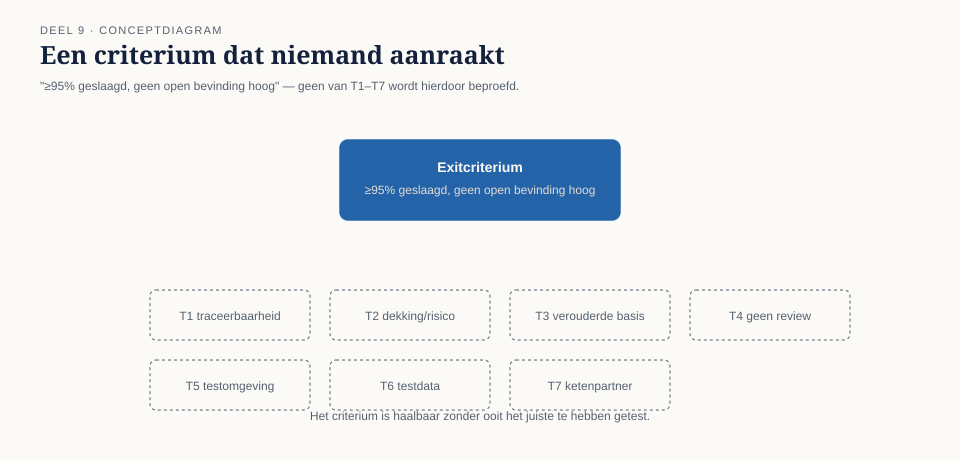

Een norm die precies werd gehaald
⏱ 12 minNa dit deel kunt u uitleggen wat metrics wel en niet over kwaliteit zeggen en het begrip perverse prikkel toepassen op een testmetric, een testrapport opstellen dat een besluit dient in plaats van een kleur toont, en entry- en exitcriteria formuleren die een organisatie daadwerkelijk kunnen tegenhouden. U kunt het verschil tussen een exitcriterium en een definition of done beargumenteren, de hoofdcategorieën testgereedschap benoemen, en reflecteren op wat er in de hele reeks T1–T8 gemeenschappelijk is.
Het exitcriterium van WGP 2.0 stond in de testaanpak, ondertekend, vier maanden vóór de livegang: "Minimaal 95% geslaagd en geen open bevinding met prioriteit hoog."
Op de dag van het advies "gereed voor productie" was dat criterium, tot op de letter, gehaald: 98,1% geslaagd, alle zes openstaande bevindingen op prioriteit laag. Niemand overtrad de afspraak. Niemand hoefde te liegen, te marchanderen of het criterium op te rekken. Het systeem voldeed eraan, zoals afgesproken.
En toch beschrijft dat criterium niets van wat er werkelijk toe deed: niet welke risico's waren afgedekt (T2), niet of de testbasis nog actueel was (T3), niet of de keten was getest (T7), niet of de testomgeving representatief was (T5). Een cijfer en een kleur, verder niets.

Een exitcriterium dat je kunt halen zonder de juiste dingen te hebben getest, is geen kwaliteitscriterium. Het is een resultaatgarantie voor het criterium zelf.
Dit is bevinding T8, de laatste van niveau 1, en in zekere zin de bevinding die alle andere mogelijk maakte: T1 tot en met T7 konden onopgemerkt blijven omdat het criterium dat had moeten opmerken, er niet naar vroeg.